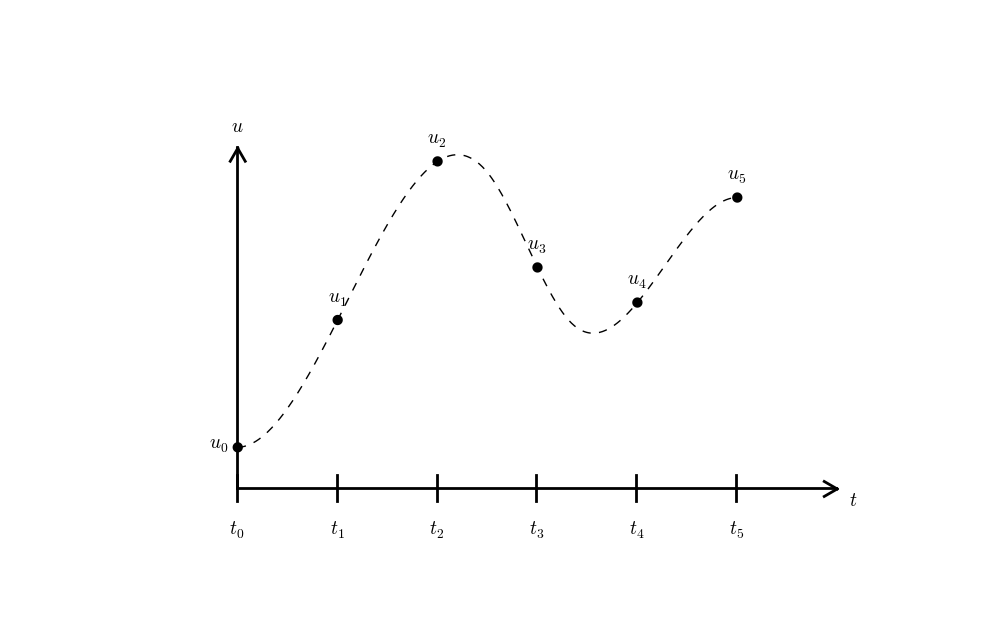
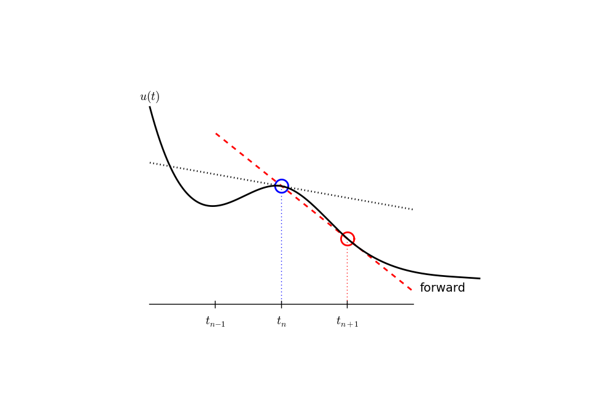
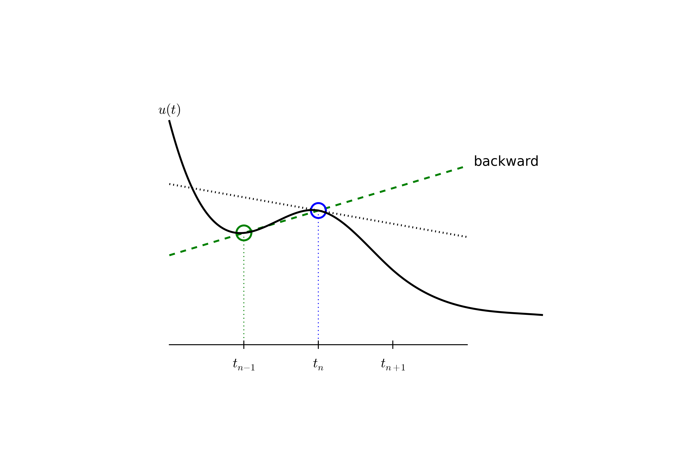
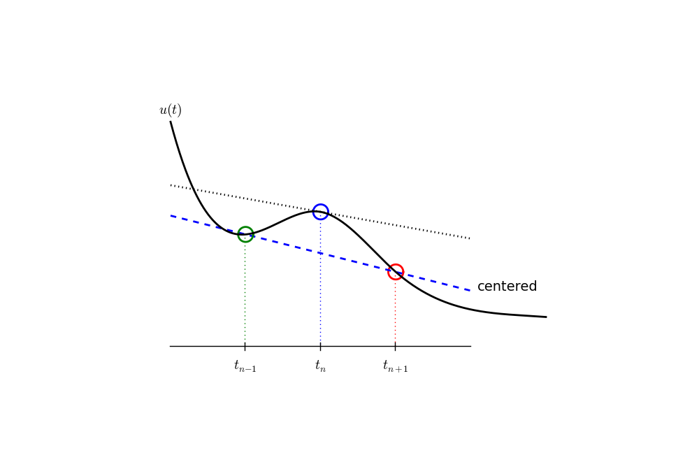
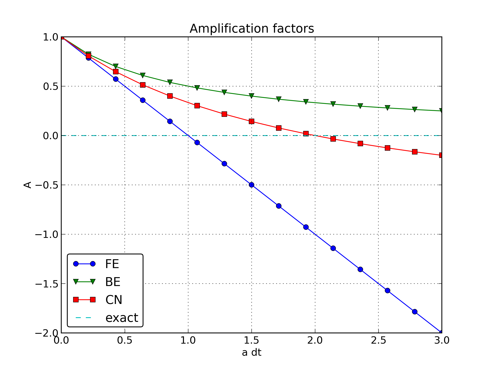

Study Guide: Intro to Computing with Finite Difference Methods
Aug 18, 2013
Table of contents
INF5620 in a nutshell
The new official six-point course description
More specific description of the contents; part 1
More specific description of the contents; part 2
The exam
Assumed/ideal background
Start-up example for the course
Start-up example
What to learn in the start-up example; standard topics
What to learn in the start-up example; programming topics
What to learn in the start-up example; mathematical analysis
What to learn in the start-up example; generalizations
Finite difference methods
Topics in the first intro to the finite difference method
A basic model for exponential decay
Applications
Continuous problem
Discrete problem
The steps in the finite difference method
Step 1: Discretizing the domain
Step 1: Discretizing the domain
What about a mesh function between the mesh points?
Step 2: Fulfilling the equation at discrete time points
Step 3: Replacing derivatives by finite differences
Step 3: Replacing derivatives by finite differences
Step 4: Formulating a recursive algorithm
Let us apply the scheme
A backward difference
The Backward Euler scheme
A centered difference
The Crank-Nicolson scheme; part 1
The Crank-Nicolson scheme; part 2
The unifying \( \theta \)-rule
Constant time step
Test the understanding!
Compact operator notation for finite differences
Compact operator notation for difference operators
The Backward Euler scheme with operator notation
The Forward Euler scheme with operator notation
The Crank-Nicolson scheme with operator notation
Implementation
Requirements of a program
Tools to learn
Why implement in Python?
Why implement in Python?
Algorithm
Translation to Python function
Integer division
Doc strings
Formatting of numbers
Running the program
Verifying the implementation
Simplest method: run a few algorithmic steps by hand
Comparison with an exact discrete solution
Making a test based on an exact discrete solution
Computing the numerical error as a mesh function
Computing the norm of the error
Norms of mesh functions
Implementation of the norm of the error
Comment on array vs scalar computation
Plotting solutions
Decorating a plot
How the plots look like
Plotting with SciTools
Creating user interfaces
Accessing command-line arguments
Reading a sequence of command-line arguments
Implementation
Working with an argument parser
Reading option-values pairs
A graphical user interface
The Parampool package
Making a compute function
The hard part of the compute function: the HTML code
How to embed a PNG plot in HTML code
Generating the user interface
Running the web application
More advanced use
Computing convergence rates
Estimating the convergence rate \( r \)
Implementation
Execution
Debugging via convergence rates
Memory-saving implementation
Memory-saving solver function
Reading computed data from file
Usage of memory-saving code
Software engineering
Making a module
Prefixing imported functions by the module name
Downside of module prefix notation
Doctests
Running doctests
Another example on using doctests
Unit testing with nose
Basic use of nose
Example on a nose test
The habit of writing nose tests
Purpose of a test function: raise AssertionError if failure
Advantages of nose
Demonstrating nose (plan)
Demonstrating nose (code)
Floats as test results
Test of wrong use
Test of convergence rates
Classical unit testing with unittest
Basic use of unittest
Demonstration of unittest
Implementing simple problem and solver classes
What to learn
The problem class
Improved problem class
The solver class
The visualizer class
Combing the classes
Implementing more advanced problem and solver classes
A generic class for parameters
The problem class
The solver class
The visualizer class
Performing scientific experiments
Model problem and numerical solution method
Plan for the experiments
Typical plot summarizing the results
Script code
Comments to the code
Interpreting output from other programs
Code for grabbing output from another program
Code for interpreting the grabbed output
Making a report
Publishing a complete project
Analysis of finite difference equations
Encouraging numerical solutions
Discouraging numerical solutions; Crank-Nicolson
Discouraging numerical solutions; Forward Euler
Summary of observations
Problem setting
Experimental investigation of oscillatory solutions
Exact numerical solution
Stability
Computation of stability in this problem
Explanation of problems with Forward Euler
Explanation of problems with Crank-Nicolson
Summary of stability
Comparing amplification factors
Plot of amplification factors
Series expansion of amplification factors
Error in amplification factors
The fraction of numerical and exact amplification factors
The true/global error at a point
Convergence
Integrated errors
Truncation error
Computation of the truncation error
The truncation error for other schemes
Consistency, stability, and convergence
Model extensions
Extension to a variable coefficient; Forward and Backward Euler
Extension to a variable coefficient; Crank-Nicolson
Extension to a variable coefficient; operator notation
Extension to a source term
Implementation of the generalized model problem
Implementations of variable coefficients; functions
Implementations of variable coefficients; classes
Implementations of variable coefficients; lambda function
Verification via trivial solutions
Verification via trivial solutions; nose test
Verification via manufactured solutions
Linear manufactured solution
Nose test for linear manufactured solution
Extension to systems of ODEs
The Backward Euler method gives a system of algebraic equations
General first-order ODEs
Generic form
The \( \theta \)-rule
Implicit 2-step backward scheme
The Leapfrog scheme
The filtered Leapfrog scheme
2nd-order Runge-Kutta scheme
4th-order Runge-Kutta scheme
2nd-order Adams-Bashforth scheme
3rd-order Adams-Bashforth scheme
The Odespy software
Example: Runge-Kutta methods
Example: Adaptive Runge-Kutta methods
INF5620 in a nutshell
- Numerical methods for partial differential equations (PDEs)
- How to we solve a PDE in practice and produce numbers?
- How to we trust the answer?
The new official six-point course description
After having completed INF5620 you
- can derive methods and implement them to solve frequently arising partial differential equations (PDEs) from physics and mechanics.
- have a good understanding of finite difference and finite element methods and how they are applied in linear and nonlinear PDE problems.
- can identify numerical artifacts and perform mathematical analysis to understand and cure non-physical effects.
- can apply sophisticated programming techniques in Python, combined with Cython, C, C++, and Fortran code, to create modern, flexible simulation programs.
- can construct verification tests and automate them.
- have experience with project hosting sites (Bitbucket, GitHub), version control systems (Git), report writing (LaTeX), and Python scripting for performing reproducible computational science.
More specific description of the contents; part 1
- Finite difference methods
- ODEs
- the wave equation \( u_{tt}=u_{xx} \) in 1D, 2D, 3D
- the diffusion equation \( u_t=u_{xx} \) in 1D, 2D, 3D
- write your own software from scratch
- understand how the methods work and why they fail
- Finite element methods for
- stationary diffusion equations \( u_{xx}=f \) in 1D
- time-dependent diffusion and wave equations in 1D
- PDEs in 2D and 3D by use of the FEniCS software
- perform hand-calculations, write your own software (1D)
- understand how the methods work and why they fail
More specific description of the contents; part 2
- Nonlinear PDEs
- Newton and Picard iteration methods, finite differences and elements
- More advanced PDEs for fluid flow and elasticity
- Parallel computing
The exam
- Oral exam
- 6 problems (topics) are announced two weeks before the exam
- Work out a 20 min presentations (talks) for each problem
- At the exam: throw a die to pick your problem to be presented
- Aids: plots, computer programs
- Why? Very effective way of learning
- Sure? Excellent results over 15 years
- When? Late december
Assumed/ideal background
- INF1100: Python programming, solution of ODEs
- Some experience with finite difference methods
- Some analytical and numerical knowledge of PDEs
- Much experience with calculus and linear algebra
- Much experience with programming of mathematical problems
- Experience with mathematical modeling with PDEs (from physics, mechanics, geophysics, or ...)
Start-up example for the course
What if you don't have this ideal background?
- Students come to this course with very different backgrounds
- First task: summarize assumed background knowledge by going through a simple example
- Also in this example:
- Some fundamental material on software implementation and software testing
- Material on analyzing numerical methods to understand why they can fail
- Applications to real-world problems
Start-up example
$$ u'=-au,\quad u(0)=I,\ t\in (0,T],$$
where \( a>0 \) is a constant.
Everything we do is motivated by what we need as building blocks for solving PDEs.
What to learn in the start-up example; standard topics
- How to think when constructing finite difference methods, with special focus on the Forward Euler, Backward Euler, and Crank-Nicolson (midpoint) schemes
- How to formulate a computational algorithm and translate it into Python code
- How to make curve plots of the solutions
- How to compute numerical errors
- How to compute convergence rates
What to learn in the start-up example; programming topics
- How to verify an implementation and automate verification through nose tests in Python
- How to structure code in terms of functions, classes, and modules
- How to work with Python concepts such as arrays, lists, dictionaries, lambda functions, functions in functions (closures), doctests, unit tests, command-line interfaces, graphical user interfaces
- How to perform array computing and understand the difference from scalar computing
- How to conduct and automate large-scale numerical experiments
- How to generate scientific reports
What to learn in the start-up example; mathematical analysis
- How to uncover numerical artifacts in the computed solution
- How to analyze the numerical schemes mathematically to understand why artifacts occur
- How to derive mathematical expressions for various measures of
the error in numerical methods, frequently by using the
sympysoftware for symbolic computation - Introduce concepts such as finite difference operators, mesh (grid), mesh functions, stability, truncation error, consistency, and convergence
What to learn in the start-up example; generalizations
- Generalize the example to \( u'(t)=-a(t)u(t) + b(t) \)
- Present additional methods for the general nonlinear ODE \( u'=f(u,t) \), which is either a scalar ODE or a system of ODEs
- How to access professional packages for solving ODEs
- How our model equations like \( u'=-au \) arises in a wide range of phenomena in physics, biology, and finance
Finite difference methods
- The finite difference method is the simplest method for solving differential equations
- Fast to learn, derive, and implement
- A very useful tool to know, even if you aim at using the finite element or the finite volume method

Topics in the first intro to the finite difference method
- How to derive a finite difference discretization of an ODE
- Key concepts: mesh, mesh function, finite difference approximations
- The Forward Euler, Backward Euler, and Crank-Nicolson methods
- Finite difference operator notation
- How to derive an algorithm and implement it in Python
- How to test the implementation
A basic model for exponential decay
The world's simplest (?) ODE:
$$
\begin{equation*}
u'(t) = -au(t),\quad u(0)=I,\ t\in (0,T]\ts
\end{equation*}
$$

Applications
- Growth and decay of populations (cells, animals, human)
- Growth and decay of a fortune
- Radioactive decay
- Cooling/heating of an object
- Pressure variation in the atmosphere
- Vertical motion of a body in water/air
- Time-discretization of diffusion PDEs by Fourier techniques
See the text for details.
Continuous problem
$$
\begin{equation}
u' = -au,\ t\in (0,T], \quad u(0)=I\thinspace . \label{decay:problem}
\end{equation}
$$
Solution of the continuous problem ("continuous solution"):
$$
\begin{equation*} u(t) = Ie^{-at}\ts\end{equation*}
$$
(special case that we can derive a formula for the discrete solution)
Discrete problem
\( u^n\approx u(t_n) \) - \( u \) is found at discrete time points \( t_1,t_2,t_3,\ldots \)
$$
\begin{equation*} u^{n+1} = Au^n\ts\end{equation*}
$$
\( A \) depends on the type of finite difference method.
Solution of the discrete problem ("discrete solution"):
$$
\begin{equation*} u^{n+1} = IA^n\ts\end{equation*}
$$
(special case that we can derive a formula for the discrete solution)
The steps in the finite difference method
Solving a differential equation by a finite difference method consists of four steps:
- discretizing the domain,
- fulfilling the equation at discrete time points,
- replacing derivatives by finite differences,
- formulating a recursive algorithm.
Step 1: Discretizing the domain
The time domain \( [0,T] \) is represented by a mesh: a finite number of \( N_t+1 \) points
$$0 = t_0 < t_1 < t_2 < \cdots < t_{N_t-1} < t_{N_t} = T\ts$$
- We seek the solution \( u \) at the mesh points: \( u(t_n) \), \( n=1,2,\ldots,N_t \).
- Note: \( u^0 \) is known as \( I \).
- Notational short-form for the numerical approximation to \( u(t_n) \): \( u^n \)
- In the differential equation: \( u \) is the exact solution
- In the numerical method and implementation: \( u^n \) is the numerical approximation, \( \uex(t) \) is the exact solution
Step 1: Discretizing the domain
\( u^n \) is a mesh function, defined at the mesh points \( t_n \), \( n=0,\ldots,N_t \) only.

What about a mesh function between the mesh points?
Can extend the mesh function to yield values between mesh points by linear interpolation:
$$
\begin{equation}
u(t) \approx u^n + \frac{u^{n+1}-u^n}{t_{n+1}-t_n}(t - t_n)\thinspace .
\end{equation}
$$
Step 2: Fulfilling the equation at discrete time points
- The ODE holds for all \( t\in (0,T] \) (infinite no of points)
- Idea: let the ODE be valid at the mesh points only (finite no of points)
$$
\begin{equation}
u'(t_n) = -au(t_n),\quad n=1,\ldots,N_t\thinspace .
\label{decay:step2}
\end{equation}
$$
Step 3: Replacing derivatives by finite differences
Now it is time for the finite difference approximations of derivatives:
$$
\begin{equation}
u'(t_n) \approx \frac{u^{n+1}-u^{n}}{t_{n+1}-t_n}\thinspace .
\label{decay:FEdiff}
\end{equation}
$$

Step 3: Replacing derivatives by finite differences
Inserting the finite difference approximation in
$$ u'(t_n) = -au(t_n),$$
gives
$$
\begin{equation}
\frac{u^{n+1}-u^{n}}{t_{n+1}-t_n} = -au^{n},\quad n=0,1,\ldots,N_t-1\thinspace .
\label{decay:step3}
\end{equation}
$$
This is the
- discrete equation
- discrete problem
- finite difference method
- finite difference scheme
Step 4: Formulating a recursive algorithm
- How can we actually compute the \( u^n \) values?
- Fundamental structure:
- given \( u^0=I \)
- compute \( u^1 \) from \( u^0 \)
- compute \( u^2 \) from \( u^1 \)
- compute \( u^3 \) from \( u^2 \) (and so forth)
- In general: we have \( u^n \) and seek \( u^{n+1} \)
$$
\begin{equation}
u^{n+1} = u^n - a(t_{n+1} -t_n)u^n\thinspace .
\label{decay:FE}
\end{equation}
$$
Let us apply the scheme
Assume constant time spacing: \( \Delta t = t_{n+1}-t_n=\mbox{const} \)
$$
\begin{align*}
u_0 &= I,\\
u_1 & = u^0 - a\Delta t u^0 = I(1-a\Delta t),\\
u_2 & = I(1-a\Delta t)^2,\\
u^3 &= I(1-a\Delta t)^3,\\
&\vdots\\
u^{N_t} &= I(1-a\Delta t)^{N_t}\thinspace .
\end{align*}
$$
Ooops - we can find the numerical solution by hand (in this simple example)! No need for a computer (yet)...
A backward difference
Here is another finite difference approximation to the derivative (backward difference):
$$
\begin{equation}
u'(t_n) \approx \frac{u^{n}-u^{n-1}}{t_{n}-t_{n-1}}\thinspace .
\label{decay:BEdiff}
\end{equation}
$$

The Backward Euler scheme
Inserting the finite difference approximation in \( u'(t_n)=-au(t_n) \) yields the Backward Euler (BE) scheme:
$$
\begin{equation}
\frac{u^{n}-u^{n-1}}{t_{n}-t_{n-1}} = -a u^n\thinspace .
\label{decay:BE0}
\end{equation}
$$
Solve with respect to the unknown \( u^{n+1} \):
$$
\begin{equation}
u^{n+1} = \frac{1}{1+ a(t_{n+1}-t_n)} u^n\thinspace .
\label{decay:BE}
\end{equation}
$$
A centered difference
Centered differences are better approximations than forward or backward differences.

The Crank-Nicolson scheme; part 1
Idea 1: let the ODE hold at \( t_{n+1/2} \)
$$ u'(t_{n+1/2} = -au(t_{n+1/2})\ts$$
Idea 2: approximate \( u'(t_{n+1/2} \) by a centered difference
$$
\begin{equation}
u'(t_{n+\frac{1}{2}}) \approx \frac{u^{n+1}-u^n}{t_{n+1}-t_n}\thinspace .
\label{decay:CNdiff}
\end{equation}
$$
Problem: \( u(t_{n+1/2}) \) is not defined, only \( u^n=u(t_n) \) and \( u^{n+1}=u(t_{n+1}) \)
Solution:
$$ u(t_{n+1/2}) \approx \frac{1}{2}(u^n + u^{n+1}) $$
The Crank-Nicolson scheme; part 2
Result:
$$
\begin{equation}
\frac{u^{n+1}-u^n}{t_{n+1}-t_n} = -a\frac{1}{2} (u^n + u^{n+1})\thinspace .
\label{decay:CN1}
\end{equation}
$$
Solve wrt to \( u^{n+1} \):
$$
\begin{equation}
u^{n+1} = \frac{1-\frac{1}{2} a(t_{n+1}-t_n)}{1 + \frac{1}{2} a(t_{n+1}-t_n)}u^n\thinspace .
\label{decay:CN}
\end{equation}
$$
This is a Crank-Nicolson (CN) scheme or a midpoint or centered scheme.
The unifying \( \theta \)-rule
The Forward Euler, Backward Euler, and Crank-Nicolson schemes can be formulated as one scheme with a varying parameter \( \theta \):
$$
\begin{equation}
\frac{u^{n+1}-u^{n}}{t_{n+1}-t_n} = -a (\theta u^{n+1} + (1-\theta) u^{n})
\label{decay:th0}
\thinspace .
\end{equation}
$$
- \( \theta =0 \): Forward Euler
- \( \theta =1 \): Backward Euler
- \( \theta =1/2 \): Crank-Nicolson
- We may alternatively choose any \( \theta\in [0,1] \).
\( u^n \) is known, solve for \( u^{n+1} \):
$$
\begin{equation}
u^{n+1} = \frac{1 - (1-\theta) a(t_{n+1}-t_n)}{1 + \theta a(t_{n+1}-t_n)}\thinspace .
\label{decay:th}
\end{equation}
$$
Constant time step
Very common assumption (not important, but exclusively used for simplicity hereafter): constant time step \( t_{n+1}-t_n\equiv\Delta t \)
$$
\begin{align}
u^{n+1} &= (1 - a\Delta t )u^n \quad (\hbox{FE})
\label{decay:FE:u}\\
u^{n+1} &= \frac{1}{1+ a\Delta t} u^n \quad (\hbox{BE})
\label{decay:BE:u}\\
u^{n+1} &= \frac{1-\frac{1}{2} a\Delta t}{1 + \frac{1}{2} a\Delta t} u^n \quad (\hbox{CN})
\label{decay:CN:u}\\
u^{n+1} &= \frac{1 - (1-\theta) a\Delta t}{1 + \theta a\Delta t}u^n \quad (\theta-\hbox{rule})
\label{decay:th:u}
\end{align}
$$
Test the understanding!
Derive Forward Euler, Backward Euler, and Crank-Nicolson schemes for Newton's law of cooling:
$$ u' = -k(u-u_S),\quad u(0)=I,\ t\in (0,T]\ts$$
Physical quantities:
- \( u(t) \): temperature of an object at time \( t \)
- \( k \): parameter expressing heat loss to the surroundings
- \( u_S \): temperature of the surroundings
- \( I \): initial temperature
Compact operator notation for finite differences
- Finite difference formulas can be tedious to write and read/understand
- Handy tool: finite difference operator notation
- Advantage: communicates the nature of the difference in a compact way
$$
\begin{equation}
[D_t^- u = -au]^n \thinspace .
\end{equation}
$$
Compact operator notation for difference operators
Forward difference:
$$
\begin{equation}
[D_t^+u]^n = \frac{u^{n+1} - u^{n}}{\Delta t}
\approx \frac{d}{dt} u(t_n) \label{fd:D:f}
\thinspace .
\end{equation}
$$
Centered difference:
$$
\begin{equation}
[D_tu]^n = \frac{u^{n+\frac{1}{2}} - u^{n-\frac{1}{2}}}{\Delta t}
\approx \frac{d}{dt} u(t_n), \label{fd:D:c}
\end{equation}
$$
Backward difference:
$$
\begin{equation}
[D_t^-u]^n = \frac{u^{n} - u^{n-1}}{\Delta t}
\approx \frac{d}{dt} u(t_n) \label{fd:D:b}
\end{equation}
$$
The Backward Euler scheme with operator notation
$$
\begin{equation*}
[D_t^-u]^n = -au^n \thinspace .
\end{equation*}
$$
Common to put the whole equation inside square brackets:
$$
\begin{equation}
[D_t^- u = -au]^n \thinspace .
\end{equation}
$$
The Forward Euler scheme with operator notation
$$
\begin{equation}
[D_t^+ u = -au]^n\ts
\end{equation}
$$
The Crank-Nicolson scheme with operator notation
Introduce an averaging operator:
$$
\begin{equation}
[\overline{u}^{t}]^n = \frac{1}{2} (u^{n-\frac{1}{2}} + u^{n+\frac{1}{2}} )
\approx u(t_n) \label{fd:mean:a}
\end{equation}
$$
The Crank-Nicolson scheme can then be written as
$$
\begin{equation}
[D_t u = -a\overline{u}^t]^{n+\frac{1}{2}}\thinspace .
\label{fd:compact:ex:CN}
\end{equation}
$$
Test: use the definitions and write out the above formula to see that it really is the Crank-Nicolson scheme!
Implementation
Model:
$$
u'(t) = -au(t),\quad t\in (0,T], \quad u(0)=I,
$$
Numerical method:
$$
u^{n+1} = \frac{1 - (1-\theta) a\Delta t}{1 + \theta a\Delta t}u^n,
$$
for \( \theta\in [0,1] \). Note
- \( \theta=0 \) gives Forward Euler
- \( \theta=1 \) gives Backward Euler
- \( \theta=1/2 \) gives Crank-Nicolson
Requirements of a program
- Compute the numerical solution \( u^n \), \( n=1,2,\ldots,N_t \)
- Display the numerical and exact solution \( \uex(t)=e^{-at} \)
- Bring evidence to a correct implementation (verification)
- Compare the numerical and the exact solution in a plot
- computes the error \( \uex (t_n) - u^n \)
- computes the convergence rate of the numerical scheme
- reads its input data from the command line
Tools to learn
- Basic Python programming
- Array computing with numpy
- Plotting with matplotlib.pyplot and scitools (equivalent use)
- File writing and reading
- Making command-line user interface via
argparse.ArgumentParser - Making graphical user interfaces via Parampool
Why implement in Python?
- Python has a very clean, readable syntax (often known as "executable pseudo-code").
- Python code is very similar to MATLAB code (and MATLAB has a particularly widespread use for scientific computing).
- Python is a full-fledged, very powerful programming language.
- Python is similar to, but much simpler to work with and results in more reliable code than C++.
Why implement in Python?
- Python has a rich set of modules for scientific computing, and its popularity in scientific computing is rapidly growing.
- Python was made for being combined with compiled languages (C, C++, Fortran) to reuse existing numerical software and to reach high computational performance of new implementations.
- Python has extensive support for administrative task needed when doing large-scale computational investigations.
- Python has extensive support for graphics (visualization, user interfaces, web applications).
- FEniCS, a very powerful tool for solving PDEs by the finite element method, is most human-efficient to operate from Python.
Algorithm
- Store \( u^n \), \( n=0,1,\ldots,N_t \) in an array
u. - Algorithm:
- initialize \( u^0 \)
- for \( t=t_n \), \( n=1,2,\ldots,N_t \): compute \( u_n \) using the \( \theta \)-rule formula
Translation to Python function
from numpy import *
def solver(I, a, T, dt, theta):
"""Solve u'=-a*u, u(0)=I, for t in (0,T] with steps of dt."""
Nt = int(T/dt) # no of time intervals
T = Nt*dt # adjust T to fit time step dt
u = zeros(Nt+1) # array of u[n] values
t = linspace(0, T, Nt+1) # time mesh
u[0] = I # assign initial condition
for n in range(0, Nt): # n=0,1,...,Nt-1
u[n+1] = (1 - (1-theta)*a*dt)/(1 + theta*dt*a)*u[n]
return u, t
Note about the for loop: range(0, Nt, s) generates all integers
from 0 to Nt in steps of s (default 1), but not including Nt (!).
Sample call:
u, t = solver(I=1, a=2, T=8, dt=0.8, theta=1)
Integer division
Python applies integer division: 1/2 is 0, while 1./2 or 1.0/2 or
1/2. or 1/2.0 or 1.0/2.0 all give 0.5.
A safer solver function (dt = float(dt) - guarantee float):
from numpy import *
def solver(I, a, T, dt, theta):
"""Solve u'=-a*u, u(0)=I, for t in (0,T] with steps of dt."""
dt = float(dt) # avoid integer division
Nt = int(round(T/dt)) # no of time intervals
T = Nt*dt # adjust T to fit time step dt
u = zeros(Nt+1) # array of u[n] values
t = linspace(0, T, Nt+1) # time mesh
u[0] = I # assign initial condition
for n in range(0, Nt): # n=0,1,...,Nt-1
u[n+1] = (1 - (1-theta)*a*dt)/(1 + theta*dt*a)*u[n]
return u, t
Doc strings
- First string after the function heading
- Used for documenting the function
- Automatic documentation tools can make fancy manuals for you
- Can be used for automatic testing
def solver(I, a, T, dt, theta):
"""
Solve
u'(t) = -a*u(t),
with initial condition u(0)=I, for t in the time interval
(0,T]. The time interval is divided into time steps of
length dt.
theta=1 corresponds to the Backward Euler scheme, theta=0
to the Forward Euler scheme, and theta=0.5 to the Crank-
Nicolson method.
"""
...
Formatting of numbers
Can control formatting of reals and integers through the printf format:
print 't=%6.3f u=%g' % (t[i], u[i])
Or the alternative format string syntax:
print 't={t:6.3f} u={u:g}'.format(t=t[i], u=u[i])
Running the program
How to run the program decay_v1.py:
Terminal> python decay_v1.py
Can also run it as "normal" Unix programs: ./decay_v1.py if the
first line is
`#!/usr/bin/env python`
Then
Terminal> chmod a+rx decay_v1.py
Terminal> ./decay_v1.py
Verifying the implementation
- Verification = bring evidence that the program works
- Find suitable test problems
- Make function for each test problem
- Later: put the verification tests in a professional testing framework
Simplest method: run a few algorithmic steps by hand
Use a calculator (\( I=0.1 \), \( \theta=0.8 \), \( \Delta t =0.8 \)):
$$ A\equiv \frac{1 - (1-\theta) a\Delta t}{1 + \theta a \Delta t} = 0.298245614035$$
$$
\begin{align*}
u^1 &= AI=0.0298245614035,\\
u^2 &= Au^1= 0.00889504462912,\\
u^3 &=Au^2= 0.00265290804728
\end{align*}
$$
See the function verify_three_steps in decay_verf1.py.
Comparison with an exact discrete solution
Define
$$ A = \frac{1 - (1-\theta) a\Delta t}{1 + \theta a \Delta t}\thinspace . $$
Repeated use of the \( \theta \)-rule:
$$
\begin{align*}
u^0 &= I,\\
u^1 &= Au^0 = AI,\\
u^n &= A^nu^{n-1} = A^nI \thinspace .
\end{align*}
$$
Making a test based on an exact discrete solution
The exact discrete solution as
$$
\begin{equation}
u^n = IA^n
\label{decay:un:exact}
\thinspace .
\end{equation}
$$
Test if
$$ \max_n |u^n - \uex(t_n)| < \epsilon\sim 10^{-15}$$
Implementation in decay_verf2.py.
Computing the numerical error as a mesh function
Task: compute the numerical error \( e^n = \uex(t_n) - u^n \)
Exact solution: \( \uex(t)=Ie^{-at} \), implemented as
def exact_solution(t, I, a):
return I*exp(-a*t)
Compute \( e^n \) by
u, t = solver(I, a, T, dt, theta) # Numerical solution
u_e = exact_solution(t, I, a)
e = u_e - u
-
exact_solution(t, I, a)works withtas array - Must have
expfromnumpy(notmath) -
e = u_e - u: array subtraction - Array arithmetics gives shorter and much faster code
Computing the norm of the error
- \( e^n \) is a mesh function
- Usually we want one number for the error
- Use a norm of \( e^n \)
Norms of a function \( f(t) \):
$$
\begin{align}
||f||_{L^2} &= \left( \int_0^T f(t)^2 dt\right)^{1/2}
\label{decay:norms:L2}\\
||f||_{L^1} &= \int_0^T |f(t)| dt
\label{decay:norms:L1}\\
||f||_{L^\infty} &= \max_{t\in [0,T]}|f(t)|
\label{decay:norms:Linf}
\end{align}
$$
Norms of mesh functions
- Problem: \( f^n =f(t_n) \) is a mesh function and hence not defined for all \( t \). How to integrate \( f^n \)?
- Idea: Apply a numerical integration rule, using only the mesh points of the mesh function.
The Trapezoidal rule:
$$ ||f^n|| = \left(\Delta t\left(\frac{1}{2}(f^0)^2 + \frac{1}{2}(f^{N_t})^2
+ \sum_{n=1}^{N_t-1} (f^n)^2\right)\right)^{1/2} $$
Common simplification yields the \( L^2 \) norm of a mesh function:
$$ ||f^n||_{\ell^2} = \left(\Delta t\sum_{n=0}^{N_t} (f^n)^2\right)^{1/2} \ts$$
Implementation of the norm of the error
$$ E = ||e^n||_{\ell^2} = \sqrt{\Delta t\sum_{n=0}^{N_t} (e^n)^2}$$
Python w/array arithmetics:
e = u_exact(t) - u
E = sqrt(dt*sum(e**2))
Comment on array vs scalar computation
Scalar computing of E = sqrt(dt*sum(e**2)):
m = len(u) # length of u array (alt: u.size)
u_e = zeros(m)
t = 0
for i in range(m):
u_e[i] = exact_solution(t, a, I)
t = t + dt
e = zeros(m)
for i in range(m):
e[i] = u_e[i] - u[i]
s = 0 # summation variable
for i in range(m):
s = s + e[i]**2
error = sqrt(dt*s)
Obviously, scalar computing
- takes more code
- is less readable
- runs much slower
Plotting solutions
Basic plotting with Matplotlib is much like MATLAB plotting
from matplotlib.pyplot import *
plot(t, u)
show()
Compare u curve with \( \uex(t) \):
t_e = linspace(0, T, 1001) # fine mesh
u_e = exact_solution(t_e, I, a)
plot(t_e, u_e, 'b-') # blue line for u_e
plot(t, u, 'r--o') # red dashes w/circles
Decorating a plot
- Use different line types
- Add axis labels
- Add curve legends
- Add plot title
- Save plot to file
from matplotlib.pyplot import *
figure() # create new plot
t_e = linspace(0, T, 1001) # fine mesh for u_e
u_e = exact_solution(t_e, I, a)
plot(t, u, 'r--o') # red dashes w/circles
plot(t_e, u_e, 'b-') # blue line for exact sol.
legend(['numerical', 'exact'])
xlabel('t')
ylabel('u')
title('theta=%g, dt=%g' % (theta, dt))
savefig('%s_%g.png' % (theta, dt))
show()
See complete code in decay_plot_mpl.py.
How the plots look like

Plotting with SciTools
SciTools provides a unified plotting interface (Easyviz) to many different plotting packages: Matplotlib, Gnuplot, Grace, VTK, OpenDX, ...
Can use Matplotlib (MATLAB-like) syntax,
or a more compact plot function syntax:
from scitools.std import *
plot(t, u, 'r--o', # red dashes w/circles
t_e, u_e, 'b-', # blue line for exact sol.
legend=['numerical', 'exact'],
xlabel='t',
ylabel='u',
title='theta=%g, dt=%g' % (theta, dt),
savefig='%s_%g.png' % (theta2name[theta], dt),
show=True)
Complete code in decay_plot_st.py.
Change backend (plotting engine, Matplotlib by default):
Terminal> python decay_plot_st.py --SCITOOLS_easyviz_backend gnuplot
Terminal> python decay_plot_st.py --SCITOOLS_easyviz_backend grace
Creating user interfaces
- Never edit the program to change input!
- Set input data on the command line or in a graphical user interface
- How is explained next
Accessing command-line arguments
- All command-line arguments are available in
sys.argv -
sys.argv[0]is the program -
sys.argv[1:]holds the command-line arguments - Method 1: fixed sequence of parameters on the command line
- Method 2:
--option valuepairs on the command line (with default values)
Terminal> python myprog.py 1.5 2 0.5 0.8 0.4
Terminal> python myprog.py --I 1.5 --a 2 -- dt 0.8 0.4
Reading a sequence of command-line arguments
The program decay_plot_mpl.py needs this input:
- \( I \)
- \( a \)
- \( T \)
- an option to turn the plot on or off (
makeplot) - a list of \( \Delta t \) values
Give these on the command line in correct sequence
Terminal> python decay_cml.py 1.5 2 0.5 0.8 0.4
Implementation
import sys
def read_command_line():
if len(sys.argv) < 6:
print 'Usage: %s I a T on/off dt1 dt2 dt3 ...' % \
sys.argv[0]; sys.exit(1) # abort
I = float(sys.argv[1])
a = float(sys.argv[2])
T = float(sys.argv[3])
makeplot = sys.argv[4] in ('on', 'True')
dt_values = [float(arg) for arg in sys.argv[5:]]
return I, a, T, makeplot, dt_values
Note:
-
sys.argv[i]is always a string - Must explicitly convert to (e.g.)
floatfor computations - List comprehensions make lists:
[expression for e in somelist]
Complete program: decay_cml.py.
Working with an argument parser
Set option-value pairs on the command line if the default value is not suitable:
Terminal> python decay_argparse.py --I 1.5 --a 2 -- dt 0.8 0.4
Code:
def define_command_line_options():
import argparse
parser = argparse.ArgumentParser()
parser.add_argument('--I', '--initial_condition', type=float,
default=1.0, help='initial condition, u(0)',
metavar='I')
parser.add_argument('--a', type=float,
default=1.0, help='coefficient in ODE',
metavar='a')
parser.add_argument('--T', '--stop_time', type=float,
default=1.0, help='end time of simulation',
metavar='T')
parser.add_argument('--makeplot', action='store_true',
help='display plot or not')
parser.add_argument('--dt', '--time_step_values', type=float,
default=[1.0], help='time step values',
metavar='dt', nargs='+', dest='dt_values')
return parser
(metavar is the symbol used in help output)
Reading option-values pairs
argparse.ArgumentParser parses the command-line arguments:
def read_command_line():
parser = define_command_line_options()
args = parser.parse_args()
print 'I={}, a={}, T={}, makeplot={}, dt_values={}'.format(
args.I, args.a, args.T, args.makeplot, args.dt_values)
return args.I, args.a, args.T, args.makeplot, args.dt_values
Complete program: decay_argparse.py.
A graphical user interface

Normally very much programming required - and much competence on graphical user interfaces.
Here: use a tool to automatically create it in a few minutes (!)
The Parampool package
- Parampool is a package for handling a large pool of input parameters in simulation programs
- Parampool can automatically create sophisticated graphical web user interfaces to set parameters and view solutions
- Key concept: a compute function that takes all input data as arguments and returning HTML code for viewing the results (e.g., plots and numbers)
Making a compute function
- What we have: decay_plot_mpl.py
-
mainfunction carries out simulations and plotting for a series of \( \Delta t \) values - Goal: steer and view these experiments from a web GUI
- What to do:
- create a compute function
- call
parampoolfunctionality
The compute function main_GUI:
def main_GUI(I=1.0, a=.2, T=4.0,
dt_values=[1.25, 0.75, 0.5, 0.1],
theta_values=[0, 0.5, 1]):
The hard part of the compute function: the HTML code
- The results are to be displayed in a web page
- Only you know what to display in your problem
- Therefore, you need to specify the HTML code
Suppose explore solves the problem, makes a plot, computes the
error and returns appropriate HTML code with the plot. Embed
error and plots in a table:
def main_GUI(I=1.0, a=.2, T=4.0,
dt_values=[1.25, 0.75, 0.5, 0.1],
theta_values=[0, 0.5, 1]):
# Build HTML code for web page. Arrange plots in columns
# corresponding to the theta values, with dt down the rows
theta2name = {0: 'FE', 1: 'BE', 0.5: 'CN'}
html_text = '<table>\n'
for dt in dt_values:
html_text += '<tr>\n'
for theta in theta_values:
E, html = explore(I, a, T, dt, theta, makeplot=True)
html_text += """
<td>
<center><b>%s, dt=%g, error: %s</b></center><br>
%s
</td>
""" % (theta2name[theta], dt, E, html)
html_text += '</tr>\n'
html_text += '</table>\n'
return html_text
How to embed a PNG plot in HTML code
In explore:
import matplotlib.pyplot as plt
...
# plot
plt.plot(t, u, r-')
plt.xlabel('t')
plt.ylabel('u')
...
from parampool.utils import save_png_to_str
html_text = save_png_to_str(plt, plotwidth=400)
If you know HTML, you can return more sophisticated layout etc.
Generating the user interface
Make a file decay_GUI_generate.py:
from parampool.generator.flask import generate
from decay_GUI import main
generate(main,
output_controller='decay_GUI_controller.py',
output_template='decay_GUI_view.py',
output_model='decay_GUI_model.py')
Running decay_GUI_generate.py results in
-
decay_GUI_model.pydefines HTML widgets to be used to set input data in the web interface, -
templates/decay_GUI_views.pydefines the layout of the web page, -
decay_GUI_controller.pyruns the web application.
Good news: we only need to run decay_GUI_controller.py
and there is no need to look into any of these files!
Running the web application
Start the GUI
Terminal> python decay_GUI_controller.py
Open a web browser at 127.0.0.1:5000
More advanced use
- The compute function can have arguments of type float, int, string, list, dict, numpy array, filename (file upload)
- Alternative: specify a hierarchy of input parameters with name, default value, data type, widget type, unit (m, kg, s), validity check
- The generated web GUI can have user accounts with login and storage of results in a database
Computing convergence rates
Frequent assumption on the relation between the numerical error \( E \) and some discretization parameter \( \Delta t \):
$$
\begin{equation}
E = C\Delta t^r,
\label{decay:E:dt}
\end{equation}
$$
- Unknown: \( C \) and \( r \).
- Goal: estimate \( r \) (and \( C \)) from numerical experiments
Estimating the convergence rate \( r \)
Perform numerical experiments: \( (\Delta t_i, E_i) \), \( i=0,\ldots,m-1 \). Two methods for finding \( r \) (and \( C \)):
- Take the logarithm of \eqref{decay:E:dt}, \( \ln E = r\ln \Delta t + \ln C \), and fit a straight line to the data points \( (\Delta t_i, E_i) \), \( i=0,\ldots,m-1 \).
- Consider two consecutive experiments, \( (\Delta t_i, E_i) \) and \( (\Delta t_{i-1}, E_{i-1}) \). Dividing the equation \( E_{i-1}=C\Delta t_{i-1}^r \) by \( E_{i}=C\Delta t_{i}^r \) and solving for \( r \) yields
$$
\begin{equation}
r_{i-1} = \frac{\ln (E_{i-1}/E_i)}{\ln (\Delta t_{i-1}/\Delta t_i)}
\label{decay:conv:rate}
\end{equation}
$$
for \( i=1,=\ldots,m-1 \).
Method 2 is best.
Implementation
Compute \( r_0, r_1, \ldots, r_{m-2} \):
from math import log
def main():
I, a, T, makeplot, dt_values = read_command_line()
r = {} # estimated convergence rates
for theta in 0, 0.5, 1:
E_values = []
for dt in dt_values:
E = explore(I, a, T, dt, theta, makeplot=False)
E_values.append(E)
# Compute convergence rates
m = len(dt_values)
r[theta] = [log(E_values[i-1]/E_values[i])/
log(dt_values[i-1]/dt_values[i])
for i in range(1, m, 1)]
for theta in r:
print '\nPairwise convergence rates for theta=%g:' % theta
print ' '.join(['%.2f' % r_ for r_ in r[theta]])
return r
Complete program: decay_convrate.py.
Execution
Terminal> python decay_convrate.py --dt 0.5 0.25 0.1 0.05 0.025 0.01
...
Pairwise convergence rates for theta=0:
1.33 1.15 1.07 1.03 1.02
Pairwise convergence rates for theta=0.5:
2.14 2.07 2.03 2.01 2.01
Pairwise convergence rates for theta=1:
0.98 0.99 0.99 1.00 1.00
Debugging via convergence rates
Potential bug: missing a in the denominator,
u[n+1] = (1 - (1-theta)*a*dt)/(1 + theta*dt)*u[n]
Running decay_convrate.py gives same rates.
Why? The value of \( a \)... (\( a=1 \))
0 and 1 are bad values in tests!
Better:
Terminal> python decay_convrate.py --a 2.1 --I 0.1 \
--dt 0.5 0.25 0.1 0.05 0.025 0.01
...
Pairwise convergence rates for theta=0:
1.49 1.18 1.07 1.04 1.02
Pairwise convergence rates for theta=0.5:
-1.42 -0.22 -0.07 -0.03 -0.01
Pairwise convergence rates for theta=1:
0.21 0.12 0.06 0.03 0.01
Forward Euler works...because \( \theta=0 \) hides the bug.
This bug gives \( r\approx 0 \):
u[n+1] = ((1-theta)*a*dt)/(1 + theta*dt*a)*u[n]
Memory-saving implementation
- Note 1: we store the entire array
u, i.e., \( u^n \) for \( n=0,1,\ldots,N_t \) - Note 2: the formula for \( u^{n+1} \) needs \( u^n \) only, not \( u^{n-1} \), \( u^{n-2} \), ...
- No need to store more than \( u^{n+1} \) and \( u^{n} \)
- Extremely important when solving PDEs
- No practical importance here (much memory available)
- But let's illustrate how to do save memory!
- Idea 1: store \( u^{n+1} \) in
u, \( u^n \) inu_1(float) - Idea 2: store
uin a file, read file later for plotting
Memory-saving solver function
def solver_memsave(I, a, T, dt, theta, filename='sol.dat'):
"""
Solve u'=-a*u, u(0)=I, for t in (0,T] with steps of dt.
Minimum use of memory. The solution is stored in a file
(with name filename) for later plotting.
"""
dt = float(dt) # avoid integer division
Nt = int(round(T/dt)) # no of intervals
outfile = open(filename, 'w')
# u: time level n+1, u_1: time level n
t = 0
u_1 = I
outfile.write('%.16E %.16E\n' % (t, u_1))
for n in range(1, Nt+1):
u = (1 - (1-theta)*a*dt)/(1 + theta*dt*a)*u_1
u_1 = u
t += dt
outfile.write('%.16E %.16E\n' % (t, u))
outfile.close()
return u, t
Reading computed data from file
def read_file(filename='sol.dat'):
infile = open(filename, 'r')
u = []; t = []
for line in infile:
words = line.split()
if len(words) != 2:
print 'Found more than two numbers on a line!', words
sys.exit(1) # abort
t.append(float(words[0]))
u.append(float(words[1]))
return np.array(t), np.array(u)
Simpler code with numpy functionality for reading/writing tabular data:
def read_file_numpy(filename='sol.dat'):
data = np.loadtxt(filename)
t = data[:,0]
u = data[:,1]
return t, u
Similar function np.savetxt, but then we need all \( u^n \) and \( t^n \) values
in a two-dimensional array (which we try to prevent now!).
Usage of memory-saving code
def explore(I, a, T, dt, theta=0.5, makeplot=True):
filename = 'u.dat'
u, t = solver_memsave(I, a, T, dt, theta, filename)
t, u = read_file(filename)
u_e = exact_solution(t, I, a)
e = u_e - u
E = np.sqrt(dt*np.sum(e**2))
if makeplot:
plt.figure()
...
Complete program: decay_memsave.py.
Software engineering
Goal: make more professional numerical software.
Topics:
- How to make modules (reusable libraries)
- Testing frameworks (doctest, nose, unittest)
- Implementation with classes
Making a module
- Previous programs: much repetitive code (esp.
solver) - DRY (Don't Repeat Yourself) principle: no copies of code
- A change needs to be done in one and only one place
- Module = just a file with functions (reused through
import) - Let's make a module by putting these functions in a file:
-
solver -
verify_three_steps -
verify_discrete_solution -
explore -
define_command_line_options -
read_command_line -
main(with convergence rates) -
verify_convergence_rate
Module name: decay_mod, filename: decay_mod.py.
Sketch:
from numpy import *
from matplotlib.pyplot import *
import sys
def solver(I, a, T, dt, theta):
...
def verify_three_steps():
...
def verify_exact_discrete_solution():
...
def exact_solution(t, I, a):
...
def explore(I, a, T, dt, theta=0.5, makeplot=True):
...
def define_command_line_options():
...
def read_command_line(use_argparse=True):
...
def main():
...
That is! It's a module decay_mod in file decay_mod.py.
Usage in some other program:
from decay_mod import solver
u, t = solver(I=1.0, a=3.0, T=3, dt=0.01, theta=0.5)
Test block:
if __name__ == '__main__':
main()
If decay_mod is imported, __name__ is decay_mod.
If decay_mod.py is run, __name__ is __main__.
Use test block for testing, demo, user interface, ...
Extended test block:
if __name__ == '__main__':
if 'verify' in sys.argv:
if verify_three_steps() and verify_discrete_solution():
pass # ok
else:
print 'Bug in the implementation!'
elif 'verify_rates' in sys.argv:
sys.argv.remove('verify_rates')
if not '--dt' in sys.argv:
print 'Must assign several dt values'
sys.exit(1) # abort
if verify_convergence_rate():
pass
else:
print 'Bug in the implementation!'
else:
# Perform simulations
main()
Prefixing imported functions by the module name
from numpy import *
from matplotlib.pyplot import *
This imports a large number of names (sin, exp, linspace, plot, ...).
Confusion: is a function from`numpy`? Or matplotlib.pyplot?
Alternative (recommended) import:
import numpy
import matplotlib.pyplot
Now we need to prefix functions with module name:
t = numpy.linspace(0, T, Nt+1)
u_e = I*numpy.exp(-a*t)
matplotlib.pyplot.plot(t, u_e)
Common standard:
import numpy as np
import matplotlib.pyplot as plt
t = np.linspace(0, T, Nt+1)
u_e = I*np.exp(-a*t)
plt.plot(t, u_e)
Downside of module prefix notation
A math line like \( e^{-at}\sin(2\pi t) \) gets cluttered with module names,
numpy.exp(-a*t)*numpy.sin(2(numpy.pi*t)
# or
np.exp(-a*t)*np.sin(2*np.pi*t)
Solution (much used in this course): do two imports
import numpy as np
from numpy import exp, sin, pi
...
t = np.linspace(0, T, Nt+1)
u_e = exp(-a*t)*sin(2*pi*t)
Doctests
Doc strings can be equipped with interactive Python sessions for demonstrating usage and automatic testing of functions.
def solver(I, a, T, dt, theta):
"""
Solve u'=-a*u, u(0)=I, for t in (0,T] with steps of dt.
>>> u, t = solver(I=0.8, a=1.2, T=4, dt=0.5, theta=0.5)
>>> for t_n, u_n in zip(t, u):
... print 't=%.1f, u=%.14f' % (t_n, u_n)
t=0.0, u=0.80000000000000
t=0.5, u=0.43076923076923
t=1.0, u=0.23195266272189
t=1.5, u=0.12489758761948
t=2.0, u=0.06725254717972
t=2.5, u=0.03621291001985
t=3.0, u=0.01949925924146
t=3.5, u=0.01049960113002
t=4.0, u=0.00565363137770
"""
...
Running doctests
Automatic check that the code reproduces the doctest output:
Terminal> python -m doctest decay_mod_doctest.py
Report in case of failure:
Terminal> python -m doctest decay_mod_doctest.py
********************************************************
File "decay_mod_doctest.py", line 12, in decay_mod_doctest....
Failed example:
for t_n, u_n in zip(t, u):
print 't=%.1f, u=%.14f' % (t_n, u_n)
Expected:
t=0.0, u=0.80000000000000
t=0.5, u=0.43076923076923
t=1.0, u=0.23195266272189
t=1.5, u=0.12489758761948
t=2.0, u=0.06725254717972
Got:
t=0.0, u=0.80000000000000
t=0.5, u=0.43076923076923
t=1.0, u=0.23195266272189
t=1.5, u=0.12489758761948
t=2.0, u=0.06725254718756
********************************************************
1 items had failures:
1 of 2 in decay_mod_doctest.solver
***Test Failed*** 1 failures.
Another example on using doctests
def explore(I, a, T, dt, theta=0.5, makeplot=True):
"""
Run a case with the solver, compute error measure,
and plot the numerical and exact solutions (if makeplot=True).
>>> for theta in 0, 0.5, 1:
... E = explore(I=1.9, a=2.1, T=5, dt=0.1, theta=theta,
... makeplot=False)
... print '%.10E' % E
...
7.3565079236E-02
2.4183893110E-03
6.5013039886E-02
"""
...
Complete program: decay_mod_doctest.py.
sys.argv and print (possible,
but needs careful coding).
Unit testing with nose
- Nose is a very user-friendly testing framework
- Based on unit testing
- Identify (small) units of code and test each unit
- Nose automates running all tests
- Good habit: run all tests after (small) edits of a code
- Even better habit: write tests before the code
- Unit testing in scientific computing is not yet well established
Basic use of nose
- Implement tests in functions with names starting with
test_. - Test functions perform assertions on computed results
using
assertfunctions from thenose.toolsmodule. - Test functions can be in the source code files or be
collected in separate files
test*.py.
Example on a nose test
Very simple module mymod:
def double(n):
return 2*n
Either in mymod.py or in a new file test_mymod.py, implement
a test that double works:
import nose.tools as nt
def test_double():
result = mymod.double(4)
nt.assert_equal(result, 8)
(Need import mymod if the test is in test_mymod.py.)
Running
Terminal> nosetests -s mymod
makes the nose tool run all test_*() functions in mymod.py.
Running
Terminal> nosetests -s
makes the nose tool run all test_*() functions in all files
test*.py in the current directory and in all subdirectories (recursevely)
with names tests or *_tests
The habit of writing nose tests
- Put
test_*()functions in the module - When you get many
test_*()functions, collect them intests/test*.py
Purpose of a test function: raise AssertionError if failure
Alternative ways of raising AssertionError if result is not 8:
import nose.tools as nt
def test_double():
result = ...
nt.assert_equal(result, 8) # alternative 1
assert result == 8 # alternative 2
if result != 8: # alternative 3
raise AssertionError()
Advantages of nose
- Easier to use than other test frameworks
- Tests are written and collected in a compact and structured way
- Large collections of tests, scattered throughout a directory tree
can be executed with one command (
nosetests -s) - Nose is a much-adopted standard
Demonstrating nose (plan)
Aim: test function solver for \( u'=-au \), \( u(0)=I \).
We design three unit tests:
- A comparison between the computed \( u^n \) values and the exact discrete solution
- A comparison between the computed \( u^n \) values and precomputed verified reference values
- A comparison between observed and expected convergence rates
These tests follow very closely the previous verify* functions.
Demonstrating nose (code)
import nose.tools as nt
import decay_mod_unittest as decay_mod
import numpy as np
def exact_discrete_solution(n, I, a, theta, dt):
"""Return exact discrete solution of the theta scheme."""
dt = float(dt) # avoid integer division
factor = (1 - (1-theta)*a*dt)/(1 + theta*dt*a)
return I*factor**n
def test_against_discrete_solution():
"""
Compare result from solver against
formula for the discrete solution.
"""
theta = 0.8; a = 2; I = 0.1; dt = 0.8
N = int(8/dt) # no of steps
u, t = decay_mod.solver(I=I, a=a, T=N*dt, dt=dt, theta=theta)
u_de = np.array([exact_discrete_solution(n, I, a, theta, dt)
for n in range(N+1)])
diff = np.abs(u_de - u).max()
nt.assert_almost_equal(diff, 0, delta=1E-14)
Floats as test results
- Round-off errors make exact comparison of floats unreliable
-
nt.assert_almost_equal: compare two floats to some digits or precision
def test_solver():
"""
Compare result from solver against
precomputed arrays for theta=0, 0.5, 1.
"""
I=0.8; a=1.2; T=4; dt=0.5 # fixed parameters
precomputed = {
't': np.array([ 0. , 0.5, 1. , 1.5, 2. , 2.5,
3. , 3.5, 4. ]),
0.5: np.array(
[ 0.8 , 0.43076923, 0.23195266, 0.12489759,
0.06725255, 0.03621291, 0.01949926, 0.0104996 ,
0.00565363]),
0: ...,
1: ...
}
for theta in 0, 0.5, 1:
u, t = decay_mod.solver(I, a, T, dt, theta=theta)
diff = np.abs(u - precomputed[theta]).max()
# Precomputed numbers are known to 8 decimal places
nt.assert_almost_equal(diff, 0, places=8,
msg='theta=%s' % theta)
Test of wrong use
- Find input data that may cause trouble and test such cases
- Here: the formula for \( u^{n+1} \) may involve integer division
Example:
theta = 1; a = 1; I = 1; dt = 2
may lead to integer division:
(1 - (1-theta)*a*dt) # becomes 1
(1 + theta*dt*a) # becomes 2
(1 - (1-theta)*a*dt)/(1 + theta*dt*a) # becomes 0 (!)
Test that solver does not suffer from such integer division:
def test_potential_integer_division():
"""Choose variables that can trigger integer division."""
theta = 1; a = 1; I = 1; dt = 2
N = 4
u, t = decay_mod.solver(I=I, a=a, T=N*dt, dt=dt, theta=theta)
u_de = np.array([exact_discrete_solution(n, I, a, theta, dt)
for n in range(N+1)])
diff = np.abs(u_de - u).max()
nt.assert_almost_equal(diff, 0, delta=1E-14)
Test of convergence rates
Convergence rate tests are very common for differential equation solvers.
def test_convergence_rates():
"""Compare empirical convergence rates to exact ones."""
# Set command-line arguments directly in sys.argv
import sys
sys.argv[1:] = '--I 0.8 --a 2.1 --T 5 '\
'--dt 0.4 0.2 0.1 0.05 0.025'.split()
r = decay_mod.main()
for theta in r:
nt.assert_true(r[theta]) # check for non-empty list
expected_rates = {0: 1, 1: 1, 0.5: 2}
for theta in r:
r_final = r[theta][-1]
# Compare to 1 decimal place
nt.assert_almost_equal(expected_rates[theta], r_final,
places=1, msg='theta=%s' % theta)
Complete program: test_decay_nose.py.
Classical unit testing with unittest
-
unittestis a Python module mimicing the classical JUnit class-based unit testing framework from Java - This is how unit testing is normally done
- Requires knowledge of object-oriented programming
Basic use of unittest
Write file test_mymod.py:
import unittest
import mymod
class TestMyCode(unittest.TestCase):
def test_double(self):
result = mymod.double(4)
self.assertEqual(result, 8)
if __name__ == '__main__':
unittest.main()
Demonstration of unittest
import unittest
import decay_mod_unittest as decay
import numpy as np
def exact_discrete_solution(n, I, a, theta, dt):
factor = (1 - (1-theta)*a*dt)/(1 + theta*dt*a)
return I*factor**n
class TestDecay(unittest.TestCase):
def test_against_discrete_solution(self):
...
diff = np.abs(u_de - u).max()
self.assertAlmostEqual(diff, 0, delta=1E-14)
def test_solver(self):
...
for theta in 0, 0.5, 1:
...
self.assertAlmostEqual(diff, 0, places=8,
msg='theta=%s' % theta)
def test_potential_integer_division():
...
self.assertAlmostEqual(diff, 0, delta=1E-14)
def test_convergence_rates(self):
...
for theta in r:
...
self.assertAlmostEqual(...)
if __name__ == '__main__':
unittest.main()
Complete program: test_decay_unittest.py.
Implementing simple problem and solver classes
- So far: programs are built of Python functions
- New focus: alternative implementations using classes
- Class-based implementations are very popular, especially in business/adm applications
- Class-based implementations scales better to large and compliex scientific applications
What to learn
Tasks:
- Explain basic use of classes to build a differential equation solver
- Introduce concepts that make such programs easily scale to more complex applications
- Demonstrate the advantage of using classes
Ideas:
- Classes for Problem, Solver, and Visualizer
- Problem: all the physics information about the problem
- Solver: all the numerics information + numerical computations
- Visualizer: plot the solution and other quantities
The problem class
- Model problem: \( u'=-au \), \( u(0)=I \), for \( t\in (0,T] \).
- Class
Problemstores the physical parameters \( a \), \( I \), \( T \) - May also offer other data, e.g., \( \uex(t)=Ie^{-at} \)
Implementation:
from numpy import exp
class Problem:
def __init__(self, I=1, a=1, T=10):
self.T, self.I, self.a = I, float(a), T
def exact_solution(self, t):
I, a = self.I, self.a # extract local variables
return I*exp(-a*t)
Basic usage:
problem = Problem(T=5)
problem.T = 8
problem.dt = 1.5
Improved problem class
More flexible input from the command line:
class Problem:
def __init__(self, I=1, a=1, T=10):
self.T, self.I, self.a = I, float(a), T
def define_command_line_options(self, parser=None):
if parser is None:
import argparse
parser = argparse.ArgumentParser()
parser.add_argument(
'--I', '--initial_condition', type=float,
default=self.I, help='initial condition, u(0)',
metavar='I')
parser.add_argument(
'--a', type=float, default=self.a,
help='coefficient in ODE', metavar='a')
parser.add_argument(
'--T', '--stop_time', type=float, default=self.T,
help='end time of simulation', metavar='T')
return parser
def init_from_command_line(self, args):
self.I, self.a, self.T = args.I, args.a, args.T
def exact_solution(self, t):
I, a = self.I, self.a
return I*exp(-a*t)
- Can utilize user's
ArgumentParser, or make one -
Noneis used to indicate a non-initialized variable
The solver class
- Store numerical data \( \Delta t \), \( \theta \)
- Compute solution and quantities derived from the solution
Implementation:
class Solver:
def __init__(self, problem, dt=0.1, theta=0.5):
self.problem = problem
self.dt, self.theta = float(dt), theta
def define_command_line_options(self, parser):
parser.add_argument(
'--dt', '--time_step_value', type=float,
default=0.5, help='time step value', metavar='dt')
parser.add_argument(
'--theta', type=float, default=0.5,
help='time discretization parameter', metavar='dt')
return parser
def init_from_command_line(self, args):
self.dt, self.theta = args.dt, args.theta
def solve(self):
from decay_mod import solver
self.u, self.t = solver(
self.problem.I, self.problem.a, self.problem.T,
self.dt, self.theta)
Note: reuse of the numerical algorithm from the decay_mod module
(i.e., the class is a wrapper of the procedural implementation).
The visualizer class
class Visualizer:
def __init__(self, problem, solver):
self.problem, self.solver = problem, solver
def plot(self, include_exact=True, plt=None):
"""
Add solver.u curve to the plotting object plt,
and include the exact solution if include_exact is True.
This plot function can be called several times (if
the solver object has computed new solutions).
"""
if plt is None:
import scitools.std as plt # can use matplotlib as well
plt.plot(self.solver.t, self.solver.u, '--o')
plt.hold('on')
theta2name = {0: 'FE', 1: 'BE', 0.5: 'CN'}
name = theta2name.get(self.solver.theta, '')
legends = ['numerical %s' % name]
if include_exact:
t_e = linspace(0, self.problem.T, 1001)
u_e = self.problem.exact_solution(t_e)
plt.plot(t_e, u_e, 'b-')
legends.append('exact')
plt.legend(legends)
plt.xlabel('t')
plt.ylabel('u')
plt.title('theta=%g, dt=%g' %
(self.solver.theta, self.solver.dt))
plt.savefig('%s_%g.png' % (name, self.solver.dt))
return plt
Remark: The plt object in plot adds a new curve to a plot,
which enables comparing different solutions from different
runs of Solver.solve
Combing the classes
Let Problem, Solver, and Visualizer play together:
def main():
problem = Problem()
solver = Solver(problem)
viz = Visualizer(problem, solver)
# Read input from the command line
parser = problem.define_command_line_options()
parser = solver. define_command_line_options(parser)
args = parser.parse_args()
problem.init_from_command_line(args)
solver. init_from_command_line(args)
# Solve and plot
solver.solve()
import matplotlib.pyplot as plt
#import scitools.std as plt
plt = viz.plot(plt=plt)
E = solver.error()
if E is not None:
print 'Error: %.4E' % E
plt.show()
Complete program: decay_class.py.
Implementing more advanced problem and solver classes
- The previous
ProblemandSolverclasses soon contain much repetitive code when the number of parameters increases - Much of such code can be parameterized and be made more compact
- Idea: collect all parameters in a dictionary
self.prms, with two associated dictionariesself.typesandself.helpfor holding associated object types and help strings - Collect common code in class
Parameters - Let
Problem,Solver, and maybeVisualizerbe subclasses of classParameters, basically definingself.prms,self.types,self.help
A generic class for parameters
class Parameters:
def set(self, **parameters):
for name in parameters:
self.prms[name] = parameters[name]
def get(self, name):
return self.prms[name]
def define_command_line_options(self, parser=None):
if parser is None:
import argparse
parser = argparse.ArgumentParser()
for name in self.prms:
tp = self.types[name] if name in self.types else str
help = self.help[name] if name in self.help else None
parser.add_argument(
'--' + name, default=self.get(name), metavar=name,
type=tp, help=help)
return parser
def init_from_command_line(self, args):
for name in self.prms:
self.prms[name] = getattr(args, name)
Slightly more advanced version in class_decay_verf1.py.
The problem class
class Problem(Parameters):
"""
Physical parameters for the problem u'=-a*u, u(0)=I,
with t in [0,T].
"""
def __init__(self):
self.prms = dict(I=1, a=1, T=10)
self.types = dict(I=float, a=float, T=float)
self.help = dict(I='initial condition, u(0)',
a='coefficient in ODE',
T='end time of simulation')
def exact_solution(self, t):
I, a = self.get('I'), self.get('a')
return I*np.exp(-a*t)
The solver class
class Solver(Parameters):
def __init__(self, problem):
self.problem = problem
self.prms = dict(dt=0.5, theta=0.5)
self.types = dict(dt=float, theta=float)
self.help = dict(dt='time step value',
theta='time discretization parameter')
def solve(self):
from decay_mod import solver
self.u, self.t = solver(
self.problem.get('I'),
self.problem.get('a'),
self.problem.get('T'),
self.get('dt'),
self.get('theta'))
def error(self):
try:
u_e = self.problem.exact_solution(self.t)
e = u_e - self.u
E = np.sqrt(self.get('dt')*np.sum(e**2))
except AttributeError:
E = None
return E
The visualizer class
- No parameters needed (for this simple problem), no need to inherit
class
Parameters - Same code as previously shown class
Visualizer - Same code as previously shown for combining
Problem,Solver, andVisualizer
Performing scientific experiments
Goal: explore the behavior of a numerical method for a differential equation and show how scientific experiments can be set up and reported.
Tasks:
- Write scripts to automate experiments
- Generate scientific reports from scripts
Tools to learn:
-
os.systemfor running other programs -
subprocessfor running other programs and extracting the output - List comprehensions
- Formats for scientific reports: HTML w/MathJax, LaTeX, Sphinx, Doconce
Model problem and numerical solution method
Problem:
$$
\begin{equation}
u'(t) = -au(t),\quad u(0)=I,\ 0< t \leq T,
\label{decay:experiments:model}
\end{equation}
$$
Solution method (\( \theta \)-rule):
$$
u^{n+1} = \frac{1 - (1-\theta) a\Delta t}{1 + \theta a\Delta t}u^n,
\quad u^0=I\thinspace .
$$
Plan for the experiments
- Plot \( u^n \) against \( \uex = Ie^{-at} \) for various choices of the parameters \( I \), \( a \), \( \Delta t \), and \( \theta \)
- How does the discrete solution compare with the exact solution when \( \Delta t \) is varied and \( \theta=0,0.5,1 \)?
- Use the decay_mod.py module (little modification of the plotting, see experiments/decay_mod.py)
- Make separate program for running (automating) the experiments (script)
-
python decay_mod.py --I 1 --a 2 --makeplot --T 5 --dt 0.5 0.25 0.1 0.05 - Combine generated figures
FE_*.png,BE_*.png, andCN_*.pngto new figures with multiple plots - Run script as
python decay_exper0.py 0.5 0.25 0.1 0.05(\( \Delta t \) values on the command line)
Typical plot summarizing the results

Script code
Typical script (small administering program) for running the experiments:
import os, sys
def run_experiments(I=1, a=2, T=5):
# The command line must contain dt values
if len(sys.argv) > 1:
dt_values = [float(arg) for arg in sys.argv[1:]]
else:
print 'Usage: %s dt1 dt2 dt3 ...' % sys.argv[0]
sys.exit(1) # abort
# Run module file as a stand-alone application
cmd = 'python decay_mod.py --I %g --a %g --makeplot --T %g' % \
(I, a, T)
dt_values_str = ' '.join([str(v) for v in dt_values])
cmd += ' --dt %s' % dt_values_str
print cmd
failure = os.system(cmd)
if failure:
print 'Command failed:', cmd; sys.exit(1)
# Combine images into rows with 2 plots in each row
image_commands = []
for method in 'BE', 'CN', 'FE':
pdf_files = ' '.join(['%s_%g.pdf' % (method, dt)
for dt in dt_values])
png_files = ' '.join(['%s_%g.png' % (method, dt)
for dt in dt_values])
image_commands.append(
'montage -background white -geometry 100%' +
' -tile 2x %s %s.png' % (png_files, method))
image_commands.append(
'convert -trim %s.png %s.png' % (method, method))
image_commands.append(
'convert %s.png -transparent white %s.png' %
(method, method))
image_commands.append(
'pdftk %s output tmp.pdf' % pdf_files)
num_rows = int(round(len(dt_values)/2.0))
image_commands.append(
'pdfnup --nup 2x%d tmp.pdf' % num_rows)
image_commands.append(
'pdfcrop tmp-nup.pdf %s.pdf' % method)
for cmd in image_commands:
print cmd
failure = os.system(cmd)
if failure:
print 'Command failed:', cmd; sys.exit(1)
# Remove the files generated above and by decay_mod.py
from glob import glob
filenames = glob('*_*.png') + glob('*_*.pdf') + \
glob('*_*.eps') + glob('tmp*.pdf')
for filename in filenames:
os.remove(filename)
if __name__ == '__main__':
run_experiments()
Complete program: experiments/decay_exper0.py.
Comments to the code
Many useful constructs in the previous script:
-
[float(arg) for arg in sys.argv[1:]]builds a list of real numbers from all the command-line arguments -
failure = os.system(cmd)runs an operating system command (e.g., another program) -
sys.exit(1)aborts the program -
['%s_%s.png' % (method, dt) for dt in dt_values]builds a list of filenames from a list of numbers (dt_values) - All
montagecommands for creating composite figures are stored in a list and thereafter executed in a loop -
glob.glob('*_*.png')returns a list of the names of all files in the current folder where the filename matches the Unix wildcard notation*_*.png(meaning "any text, underscore, any text, and then `.png`") -
os.remove(filename)removes the file with namefilename
Interpreting output from other programs
In decay_exper0.py we run a program (os.system) and
want to grab the output, e.g.,
Terminal> python decay_plot_mpl.py
0.0 0.40: 2.105E-01
0.0 0.04: 1.449E-02
0.5 0.40: 3.362E-02
0.5 0.04: 1.887E-04
1.0 0.40: 1.030E-01
1.0 0.04: 1.382E-02
Tasks:
- read the output from the
decay_mod.pyprogram - interpret this output and store the \( E \) values in arrays for each \( \theta \) value
- plot \( E \) versus \( \Delta t \), for each \( \theta \), in a log-log plot
Code for grabbing output from another program
Use the subprocess module to grab output:
from subprocess import Popen, PIPE, STDOUT
p = Popen(cmd, shell=True, stdout=PIPE, stderr=STDOUT)
output, dummy = p.communicate()
failure = p.returncode
if failure:
print 'Command failed:', cmd; sys.exit(1)
Code for interpreting the grabbed output
- Run through the
outputstring, line by line - If the current line prints \( \theta \), \( \Delta t \), and \( E \), split the line into these three pieces and store the data
- Store data in a dictionary
errorswith keysdtand the three \( \theta \) values
errors = {'dt': dt_values, 1: [], 0: [], 0.5: []}
for line in output.splitlines():
words = line.split()
if words[0] in ('0.0', '0.5', '1.0'): # line with E?
# typical line: 0.0 1.25: 7.463E+00
theta = float(words[0])
E = float(words[2])
errors[theta].append(E)
Next: plot \( E \) versus \( \Delta t \) for \( \theta=0,0.5,1 \)
Complete program: experiments/decay_exper1.py. Fine recipe for
- how to run other programs
- how to extract and interpret output from other programs
- how to automate many manual steps in creating simulations and figures
Making a report
- Scientific investigations are best documented in a report!
- A sample report
- How can we write such a report?
- First problem: what format should I write in?
- Plain HTML, generated by decay_exper1_html.py
- HTML with MathJax, generated by decay_exper1_mathjax.py
- LaTeX PDF, based on LaTeX source
- Sphinx HTML, based on reStructuredText
- Markdown, MediaWiki, ...
- Doconce can generate LaTeX, HTML w/MathJax, Sphinx, Markdown, MediaWiki, ... (Doconce source for the examples above, and Python program for generating the Doconce source)
- Examples on different report formats
Publishing a complete project
- Make folder (directory) tree
- Keep track of all files via a version control system (Mercurial, Git, ...)
- Publish as private or public repository
- Utilize Bitbucket, Googlecode, GitHub, or similar
- See the intro to such tools
Analysis of finite difference equations
Model:
$$
\begin{equation}
u'(t) = -au(t),\quad u(0)=I,
\end{equation}
$$
Method:
$$
\begin{equation}
u^{n+1} = \frac{1 - (1-\theta) a\Delta t}{1 + \theta a\Delta t}u^n
\label{decay:analysis:scheme}
\end{equation}
$$
Encouraging numerical solutions
\( I=1 \), \( a=2 \), \( \theta =1,0.5, 0 \), \( \Delta t=1.25, 0.75, 0.5, 0.1 \).

Discouraging numerical solutions; Crank-Nicolson

Discouraging numerical solutions; Forward Euler

Summary of observations
The characteristics of the displayed curves can be summarized as follows:
- The Backward Euler scheme always gives a monotone solution, lying above the exact curve.
- The Crank-Nicolson scheme gives the most accurate results, but for \( \Delta t=1.25 \) the solution oscillates.
- The Forward Euler scheme gives a growing, oscillating solution for \( \Delta t=1.25 \); a decaying, oscillating solution for \( \Delta t=0.75 \); a strange solution \( u^n=0 \) for \( n\geq 1 \) when \( \Delta t=0.5 \); and a solution seemingly as accurate as the one by the Backward Euler scheme for \( \Delta t = 0.1 \), but the curve lies below the exact solution.
Problem setting
- Under what circumstances, i.e., values of the input data \( I \), \( a \), and \( \Delta t \) will the Forward Euler and Crank-Nicolson schemes result in undesired oscillatory solutions?
Techniques of investigation:
- Numerical experiments
- Mathematical analysis
Another question to be raised is
- How does \( \Delta t \) impact the error in the numerical solution?
Experimental investigation of oscillatory solutions
The solution is oscillatory if
$$ u^{n} > u^{n-1},$$

Seems that \( a\Delta t < 1 \) for FE and 2 for CN.
Exact numerical solution
Starting with \( u^0=I \), the simple recursion \eqref{decay:analysis:scheme} can be applied repeatedly \( n \) times, with the result that
$$
\begin{equation}
u^{n+1} = IA^n,\quad A = \frac{1 - (1-\theta) a\Delta t}{1 + \theta a\Delta t}\thinspace .
\label{decay:analysis:unex}
\end{equation}
$$
Such an exact discrete solution is unusual, but very handy since it allows a much more detailed mathematical analysis that what is normally possible.
Stability
Since \( u^n\sim A^n \),
- \( A<0 \) will give a factor \( (-1)^n \) and oscillatory solutions
- \( |A|>1 \) will give growing solutions
- Recall: the exact solution is monotone decaying
- If these qualitative properties are not met, we say that the numerical is unstable
Computation of stability in this problem
\( A<0 \) if
$$
\begin{equation}
\frac{1 - (1-\theta) a\Delta t}{1 + \theta a\Delta t} < 0\ts
\label{decay:th:stability}
\end{equation}
$$
To avoid oscillatory solutions we must have \( A> 0 \) and
$$
\begin{equation}
\Delta t < \frac{1}{(1-\theta)a}\thinspace .
\end{equation}
$$
- Always fulfilled for Backward Euler
- \( \Delta t \leq 1/a \) for Forward Euler
- \( \Delta t \leq 2/a \) for Crank-Nicolson
Explanation of problems with Forward Euler
- \( a\Delta t= 2\cdot 1.25=2.5 \) and \( A=-1.5 \): oscillations and growth
- \( a\Delta t = 2\cdot 0.75=1.5 \) and \( A=-0.5 \): oscillations and decay
- \( \Delta t=0.5 \) and \( A=0 \): \( u^n=0 \) for \( n>0 \)
- Smaller \( Delta t \): qualitatively correct solution
Explanation of problems with Crank-Nicolson
- \( \Delta t=1.25 \) and \( A=-0.25 \): oscillatory solution
- Never any growing solution
Summary of stability
- Forward Euler is conditionally stable
- \( \Delta t < 2/a \) for avoiding growth
- \( \Delta t\leq 1/a \) for avoiding oscillations
- The Crank-Nicolson is unconditionally stable wrt growth and conditionally stable wrt oscillations
- \( \Delta t < 2/a \) for avoiding oscillations
- Backward Euler is unconditionally stable
Comparing amplification factors
Exact solution:
$$ u(t_{n+1}) = \Aex u(t_n), \quad \Aex = e^{-a\Delta t}$$
Numerical solution:
$$ u^{n+1} = Au^n,\quad A = \frac{1 - (1-\theta) a\Delta t}{1 + \theta a\Delta t} $$
Plot of amplification factors

Series expansion of amplification factors
To better see the similarties of \( \Aex \) and \( A \) mathematically, we can Taylor expand \( \Aex(p) \) and \( A(p) \), \( p=a\Delta t \).
>>> from sympy import *
>>> # Create p as a mathematical symbol with name 'p'
>>> p = Symbol('p')
>>> # Create a mathematical expression with p
>>> A_e = exp(-p)
>>>
>>> # Find the first 6 terms of the Taylor series of A_e
>>> A_e.series(p, 6)
1 + (1/2)*p**2 - p - 1/6*p**3 - 1/120*p**5 + (1/24)*p**4 + O(p**6)
>>> theta = Symbol('theta')
>>> A = (1-(1-theta)*p)/(1+theta*p)
>>> FE = A_e.series(p, 4) - A.subs(theta, 0).series(p, 4)
>>> BE = A_e.series(p, 4) - A.subs(theta, 1).series(p, 4)
>>> CN = A_e.series(p, 4) - A.subs(theta, half).series(p, 4)
>>> FE
(1/2)*p**2 - 1/6*p**3 + O(p**4)
>>> BE
-1/2*p**2 + (5/6)*p**3 + O(p**4)
>>> CN
(1/12)*p**3 + O(p**4)
Error in amplification factors
Focus: the error measure \( A-\Aex \) as function of \( \Delta t \) (\( p=a\Delta t \)):
$$
\begin{equation}
A-\Aex = \left\lbrace\begin{array}{ll}
\Oof{\Delta t^2}, & \hbox{Forward and Backward Euler},\\
\Oof{\Delta t^3}, & \hbox{Crank-Nicolson}
\end{array}\right.
\end{equation}
$$
The fraction of numerical and exact amplification factors
Focus: the error measure \( 1-A/\Aex \) as function of \( p=a\Delta t \):
>>> FE = 1 - (A.subs(theta, 0)/A_e).series(p, 4)
>>> BE = 1 - (A.subs(theta, 1)/A_e).series(p, 4)
>>> CN = 1 - (A.subs(theta, half)/A_e).series(p, 4)
>>> FE
(1/2)*p**2 + (1/3)*p**3 + O(p**4)
>>> BE
-1/2*p**2 + (1/3)*p**3 + O(p**4)
>>> CN
(1/12)*p**3 + O(p**4)
Same leading-order terms as for the error measure \( A-\Aex \).
The true/global error at a point
Focus: the global error \( e^n = \uex(t_n) - u^n \)
>>> n = Symbol('n')
>>> u_e = exp(-p*n) # I=1
>>> u_n = A**n # I=1
>>> FE = u_e.series(p, 4) - u_n.subs(theta, 0).series(p, 4)
>>> BE = u_e.series(p, 4) - u_n.subs(theta, 1).series(p, 4)
>>> CN = u_e.series(p, 4) - u_n.subs(theta, half).series(p, 4)
>>> FE
(1/2)*n*p**2 - 1/2*n**2*p**3 + (1/3)*n*p**3 + O(p**4)
>>> BE
(1/2)*n**2*p**3 - 1/2*n*p**2 + (1/3)*n*p**3 + O(p**4)
>>> CN
(1/12)*n*p**3 + O(p**4)
Substitute \( n \) by \( t/\Delta t \):
- Forward and Backward Euler: leading order term \( \frac{1}{2}ta^2t\Delta t \)
- Crank-Nicolson: leading order term \( \frac{1}{12}ta^3\Delta t^2 \)
Convergence
The numerical scheme is convergent if the global error \( e^n\rightarrow 0 \) as \( \Delta t\rightarrow 0 \). If the error has a leading order term \( \Delta t^r \), the convergence rate is of order \( r \).
Integrated errors
Focus: norm of the numerical error
$$ ||e^n||_{\ell^2} = \sqrt{\Delta t\sum_{n=0}^{N_t} ({\uex}(t_n) - u^n)^2}
\ts $$
Forward and Backward Euler:
$$ ||e^n||_{\ell^2} = \frac{1}{4}\sqrt{\frac{T^3}{3}} a^2\Delta t\ts$$
Crank-Nicolson:
$$ ||e^n||_{\ell^2} = \frac{1}{12}\sqrt{\frac{T^3}{3}}a^3\Delta t^2\ts$$
- 1st order for Forward and Backward Euler
- 2nd order for Crank-Nicolson
Truncation error
- How good is the discrete equation?
- Possible answer: see how well \( \uex \) fits the discrete equation
$$ \lbrack D_t u = -au\rbrack^n,$$
i.e.,
$$ \frac{u^{n+1}-u^n}{\Delta t} = -au^n\ts$$
Insert \( \uex \) (which does not in general fulfill this equation):
$$
\begin{equation}
\frac{\uex(t_{n+1})-\uex(t_n)}{\Delta t} + a\uex(t_n) = R^n \neq 0
\ts
\label{decay:analysis:trunc:Req}
\end{equation}
$$
Computation of the truncation error
- The residual \( R^n \) is the truncation error.
- How does \( R^n \) vary with \( \Delta t \)?
Tool: Taylor expand \( \uex \) around the point where the ODE is sampled (here \( t_n \))
$$ \uex(t_{n+1}) = \uex(t_n) + \uex'(t_n)\Delta t + \frac{1}{2}\uex''(t_n)
\Delta t^2 + \cdots $$
Inserting this Taylor series in \eqref{decay:analysis:trunc:Req} gives
$$ R^n = \uex'(t_n) + \frac{1}{2}\uex''(t_n)\Delta t + \ldots + a\uex(t_n)\ts$$
Now, \( \uex \) solves the ODE \( \uex'=-a\uex \), and then
$$ R^n \approx \frac{1}{2}\uex''(t_n)\Delta t \ts $$
This is a mathematical expression for the truncation error.
The truncation error for other schemes
Backward Euler:
$$ R^n \approx -\frac{1}{2}\uex''(t_n)\Delta t, $$
Crank-Nicolson:
$$ R^{n+1/2} \approx \frac{1}{24}\uex'''(t_{n+\frac{1}{2}})\Delta t^2\ts$$
Consistency, stability, and convergence
- Truncation error measures the residual in the difference equations. The scheme is consistent if the truncation error goes to 0 as \( \Delta t\rightarrow 0 \). Importance: the difference equations approaches the differential equation as \( \Delta t\rightarrow 0 \).
- Stability means that the numerical solution exhibits the same qualitative properties as the exact solution. Here: monotone, decaying function.
- Convergence implies that the true (global) error \( e^n =\uex(t_n)-u^n\rightarrow 0 \) as \( \Delta t\rightarrow 0 \). This is really what we want!
The Lax equivalence theorem for linear differential equations: consistency + stability is equivalent with convergence.
(Consistency and stability is in most problems much easier to establish than convergence.)
Model extensions
Extension to a variable coefficient; Forward and Backward Euler
$$
\begin{equation}
u'(t) = -a(t)u(t),\quad t\in (0,T],\quad u(0)=I \thinspace .
\label{decay:problem:a}
\end{equation}
$$
The Forward Euler scheme:
$$
\begin{equation}
\frac{u^{n+1} - u^n}{\Delta t} = -a(t_n)u^n
\thinspace .
\end{equation}
$$
The Backward Euler scheme:
$$
\begin{equation}
\frac{u^{n} - u^{n-1}}{\Delta t} = -a(t_n)u^n
\thinspace .
\end{equation}
$$
Extension to a variable coefficient; Crank-Nicolson
Eevaluting \( a(t_{n+\frac{1}{2}}) \) and using an average for \( u \):
$$
\begin{equation}
\frac{u^{n+1} - u^{n}}{\Delta t} = -a(t_{n+\frac{1}{2}})\frac{1}{2}(u^n + u^{n+1})
\thinspace .
\end{equation}
$$
Using an average for \( a \) and \( u \):
$$
\begin{equation}
\frac{u^{n+1} - u^{n}}{\Delta t} = -\frac{1}{2}(a(t_n)u^n + a(t_{n+1})u^{n+1})
\thinspace .
\end{equation}
$$
The \( \theta \)-rule unifies the three mentioned schemes,
$$
\begin{equation}
\frac{u^{n+1} - u^{n}}{\Delta t} = -a((1-\theta)t_n + \theta t_{n+1})((1-\theta) u^n + \theta u^{n+1})
\thinspace .
\end{equation}
$$
or,
$$
\begin{equation}
\frac{u^{n+1} - u^{n}}{\Delta t} = -(1-\theta) a(t_n)u^n - \theta
a(t_{n+1})u^{n+1}
\thinspace .
\end{equation}
$$
Extension to a variable coefficient; operator notation
$$
\begin{align*}
\lbrack D^+_t u &= -au\rbrack^n,\\
\lbrack D^-_t u &= -au\rbrack^n,\\
\lbrack D_t u &= -a\overline{u}^t\rbrack^{n+\frac{1}{2}},\\
\lbrack D_t u &= -\overline{au}^t\rbrack^{n+\frac{1}{2}},\\
\thinspace .
\end{align*}
$$
Extension to a source term
$$
\begin{equation}
u'(t) = -a(t)u(t) + b(t),\quad t\in (0,T],\quad u(0)=I
\thinspace .
\label{decay:problem:ab}
\end{equation}
$$
$$
\begin{align*}
\lbrack D^+_t u &= -au + b\rbrack^n,\\
\lbrack D^-_t u &= -au + b\rbrack^n,\\
\lbrack D_t u &= -a\overline{u}^t + b\rbrack^{n+\frac{1}{2}},\\
\lbrack D_t u &= \overline{-au+b}^t\rbrack^{n+\frac{1}{2}}
\thinspace .
\end{align*}
$$
Implementation of the generalized model problem
$$
\begin{equation}
u^{n+1} = ((1 - \Delta t(1-\theta)a^n)u^n
+ \Delta t(\theta b^{n+1} + (1-\theta)b^n))(1 + \Delta t\theta a^{n+1})^{-1}
\thinspace .
\end{equation}
$$
Implementation where \( a(t) \) and \( b(t) \) are given as Python functions (see file decay_vc.py):
def solver(I, a, b, T, dt, theta):
"""
Solve u'=-a(t)*u + b(t), u(0)=I,
for t in (0,T] with steps of dt.
a and b are Python functions of t.
"""
dt = float(dt) # avoid integer division
Nt = int(round(T/dt)) # no of time intervals
T = Nt*dt # adjust T to fit time step dt
u = zeros(Nt+1) # array of u[n] values
t = linspace(0, T, Nt+1) # time mesh
u[0] = I # assign initial condition
for n in range(0, Nt): # n=0,1,...,Nt-1
u[n+1] = ((1 - dt*(1-theta)*a(t[n]))*u[n] + \
dt*(theta*b(t[n+1]) + (1-theta)*b(t[n])))/\
(1 + dt*theta*a(t[n+1]))
return u, t
Implementations of variable coefficients; functions
Plain functions:
def a(t):
return a_0 if t < tp else k*a_0
def b(t):
return 1
Implementations of variable coefficients; classes
Better implementation: class with the parameters a0, tp, and k
as attributes and a special method __call__ for evaluating \( a(t) \):
class A:
def __init__(self, a0=1, k=2):
self.a0, self.k = a0, k
def __call__(self, t):
return self.a0 if t < self.tp else self.k*self.a0
a = A(a0=2, k=1) # a behaves as a function a(t)
Implementations of variable coefficients; lambda function
Quick writing: a one-liner lambda function
a = lambda t: a_0 if t < tp else k*a_0
In general,
f = lambda arg1, arg2, ...: expressin
is equivalent to
def f(arg1, arg2, ...):
return expression
One can use lambda functions directly in calls:
u, t = solver(1, lambda t: 1, lambda t: 1, T, dt, theta)
for a problem \( u'=-u+1 \), \( u(0)=1 \).
A lambda function can appear anywhere where a variable can appear.
Verification via trivial solutions
- Start debugging of a new code with trying a problem where \( u=\hbox{const} \neq 0 \).
- Choose \( u=C \) (a constant). Choose any \( a(t) \) and set \( b=a(t)C \) and \( I=C \).
- "All" numerical methods will reproduce \( u=_{\hbox{const}} \) exactly (machine precision).
- Often \( u=C \) eases debugging.
- In this example: any error in the formula for \( u^{n+1} \) make \( u\neq C \)!
Verification via trivial solutions; nose test
import nose.tools as nt
def test_constant_solution():
"""
Test problem where u=u_const is the exact solution, to be
reproduced (to machine precision) by any relevant method.
"""
def exact_solution(t):
return u_const
def a(t):
return 2.5*(1+t**3) # can be arbitrary
def b(t):
return a(t)*u_const
u_const = 2.15
theta = 0.4; I = u_const; dt = 4
Nt = 4 # enough with a few steps
u, t = solver(I=I, a=a, b=b, T=Nt*dt, dt=dt, theta=theta)
print u
u_e = exact_solution(t)
difference = abs(u_e - u).max() # max deviation
nt.assert_almost_equal(difference, 0, places=14)
Verification via manufactured solutions
- Choose any formula for \( u(t) \).
- Fit I, \( a(t) \), and \( b(t) \) in \( u'=-au+b \), \( u(0)=I \), to make the chosen formula a solution of the ODE problem.
- Then we can always have an analytical solution (!).
- Ideal for verification: testing convergence rates.
- Called the method of manufactured solutions (MMS)
- Special case: \( u \) linear in \( t \), because all sound numerical methods will reproduce a linear \( u \) exactly (machine precision).
- \( u(t) = ct + d \). \( u(0)=0 \) means \( d=I \).
- ODE implies \( c = -a(t)u + b(t) \).
- Choose \( a(t) \) and \( c \), and set \( b(t) = c + a(t)(ct + I) \).
- Any error in the formula for \( u^{n+1} \) makes \( u\neq ct+I \)!
Linear manufactured solution
\( u^n = ct_n+I \) fulfills the discrete equations!
First,
$$
\begin{align}
\lbrack D_t^+ t\rbrack^n &= \frac{t_{n+1}-t_n}{\Delta t}=1,
\label{decay:fd2:Dop:tn:fw}\\
\lbrack D_t^- t\rbrack^n &= \frac{t_{n}-t_{n-1}}{\Delta t}=1,
\label{decay:fd2:Dop:tn:bw}\\
\lbrack D_t t\rbrack^n &= \frac{t_{n+\frac{1}{2}}-t_{n-\frac{1}{2}}}{\Delta t}=\frac{(n+\frac{1}{2})\Delta t - (n-\frac{1}{2})\Delta t}{\Delta t}=1\label{decay:fd2:Dop:tn:cn}
\thinspace .
\end{align}
$$
Forward Euler:
$$ [D^+ u = -au + b]^n, $$
\( a^n=a(t_n) \), \( b^n=c + a(t_n)(ct_n + I) \), and \( u^n=ct_n + I \) results in
$$ c = -a(t_n)(ct_n+I) + c + a(t_n)(ct_n + I) = c $$
Nose test for linear manufactured solution
def test_linear_solution():
"""
Test problem where u=c*t+I is the exact solution, to be
reproduced (to machine precision) by any relevant method.
"""
def exact_solution(t):
return c*t + I
def a(t):
return t**0.5 # can be arbitrary
def b(t):
return c + a(t)*exact_solution(t)
theta = 0.4; I = 0.1; dt = 0.1; c = -0.5
T = 4
Nt = int(T/dt) # no of steps
u, t = solver(I=I, a=a, b=b, T=Nt*dt, dt=dt, theta=theta)
u_e = exact_solution(t)
difference = abs(u_e - u).max() # max deviation
print difference
# No of decimal places for comparison depend on size of c
nt.assert_almost_equal(difference, 0, places=14)
Extension to systems of ODEs
Sample system:
$$
\begin{align}
u' &= a u + bv,\\
v' &= cu + dv,
\end{align}
$$
The Forward Euler method:
$$
\begin{align}
u^{n+1} &= u^n + \Delta t (a u^n + b v^n),\\
v^{n+1} &= u^n + \Delta t (cu^n + dv^n)
\thinspace .
\end{align}
$$
The Backward Euler method gives a system of algebraic equations
The Backward Euler scheme:
$$
\begin{align}
u^{n+1} &= u^n + \Delta t (a u^{n+1} + b v^{n+1}),\\
v^{n+1} &= v^n + \Delta t (c u^{n+1} + d v^{n+1})\ts
\end{align}
$$
which is a \( 2\times 2 \) linear system:
$$
\begin{align}
(1 - \Delta t a)u^{n+1} + bv^{n+1} &= u^n ,\\
c u^{n+1} + (1 - \Delta t d) v^{n+1} &= v^n ,
\end{align}
$$
Crank-Nicolson also gives a \( 2\times 2 \) linear system.
General first-order ODEs
Generic form
The standard form for ODEs:
$$
\begin{equation}
u' = f(u,t),\quad u(0)=I,
\label{decay:ode:general}
\end{equation}
$$
\( u \) and \( f \): scalar or vector.
Vectors in case of ODE systems:
$$ u(t) = (u^{(0)}(t),u^{(1)}(t),\ldots,u^{(m-1)}(t)) \thinspace . $$
$$
\begin{align*}
f(u, t) = ( & f^{(0)}(u^{(0)},\ldots,u^{(m-1)}),\\
& f^{(1)}(u^{(0)},\ldots,u^{(m-1)}),\\
& \vdots\\
& f^{(m-1)}(u^{(0)}(t),\ldots,u^{(m-1)}(t)))
\thinspace .
\end{align*}
$$
The \( \theta \)-rule
$$
\begin{equation}
\frac{u^{n+1}-u^n}{\Delta t} = \theta f(u^{n+1},t_{n+1}) +
(1-\theta)f(u^n, t_n)\ts
\label{decay:fd2:theta}
\end{equation}
$$
Bringing the unknown \( u^{n+1} \) to the left-hand side and the known terms
on the right-hand side gives
$$
\begin{equation}
u^{n+1} - \Delta t \theta f(u^{n+1},t_{n+1}) =
u^n + \Delta t(1-\theta)f(u^n, t_n)\ts
\end{equation}
$$
This is a nonlinear equation in \( u^{n+1} \) (unless \( f \) is linear in \( u \))!
Implicit 2-step backward scheme
$$ u'(t_{n+1}) \approx \frac{3u^{n+1} - 4u^{n} + u^{n-1}}{2\Delta t},$$
Scheme:
$$ u^{n+1} = \frac{4}{3}u^n - \frac{1}{3}u^{n-1} +
\frac{2}{3}\Delta t f(u^{n+1}, t_{n+1})
\thinspace .
\label{decay:fd2:bw:2step}
$$
Nonlinear equation for \( u^{n+1} \).
The Leapfrog scheme
Idea:
$$
\begin{equation}
u'(t_n)\approx \frac{u^{n+1}-u^{n-1}}{2\Delta t} = [D_{2t} u]^n,
\end{equation}
$$
Scheme:
$$ [D_{2t} u = f(u,t)]^n,$$
or written out,
$$
\begin{equation}
u^{n+1} = u^{n-1} + \Delta t f(u^n, t_n)
\thinspace .
\label{decay:fd2:leapfrog}
\end{equation}
$$
- Some other scheme must be used as starter (\( u^1 \)).
- Explicit scheme - a nonlinear \( f \) (in \( u \)) is trivial to handle.
- Downside: Leapfrog is always unstable after some time.
The filtered Leapfrog scheme
After computing \( u^{n+1} \), stabilize Leapfrog by
$$
\begin{equation}
u^n\ \leftarrow\ u^n + \gamma (u^{n-1} - 2u^n + u^{n+1})
\label{decay:fd2:leapfrog:filtered}
\thinspace .
\end{equation}
$$
2nd-order Runge-Kutta scheme
Forward-Euler + approximate Crank-Nicolson:
$$
\begin{align}
u^* &= u^n + \Delta t f(u^n, t_n),
\label{decay:fd2:RK2:s1}\\
u^{n+1} &= u^n + \Delta t \frac{1}{2} \left( f(u^n, t_n) + f(u^*, t_{n+1})
\right),
\label{decay:fd2:RK2:s2}
\end{align}
$$
4th-order Runge-Kutta scheme
- The most famous and widely used ODE method
- 4 evaluations of \( f \) per time step
- Its "derivation": "" is a very good illustration of numerical thinking!
2nd-order Adams-Bashforth scheme
$$
\begin{equation}
u^{n+1} = u^n + \frac{1}{2}\Delta t\left( 3f(u^n, t_n) - f(u^{n-1}, t_{n-1})
\right)
\thinspace .
\label{decay:fd2:AB2}
\end{equation}
$$
3rd-order Adams-Bashforth scheme
$$
\begin{equation}
u^{n+1} = u^n + \frac{1}{12}\left( 23f(u^n, t_n) - 16 f(u^{n-1},t_{n-1})
+ 5f(u^{n-2}, t_{n-2})\right)
\thinspace .
\label{decay:fd2:AB3}
\end{equation}
$$
The Odespy software
Odespy features simple Python implementations of the most fundamental schemes as well as Python interfaces to several famous packages for solving ODEs: ODEPACK, Vode, rkc.f, rkf45.f, Radau5, as well as the ODE solvers in SciPy, SymPy, and odelab.
Typical usage:
def f(u, t):
return -a*u
import odespy
import numpy as np
I = 1; a = 2; T = 6; dt = 1
solver = odespy.RK4(f)
solver.set_initial_condition(I)
t_mesh = np.linspace(0, T, Nt+1)
u, t = solver.solve(t_mesh)
Example: Runge-Kutta methods
solvers = [odespy.RK2(f),
odespy.RK3(f),
odespy.RK4(f),
odespy.BackwardEuler(f, nonlinear_solver='Newton')]
for solver in solvers:
solver.set_initial_condition(I)
u, t = solver.solve(t)
# + lots of plot code...
Figure 1: Behavior of different schemes for the decay equation.

The 4-th order Runge-Kutta method (RK4) is the method of choice!
Example: Adaptive Runge-Kutta methods
- Adaptive methods find "optimal" locations of the mesh points to ensure that the error is less than a given tolerance.
- Downside: approximate error estimation, not always optimal location of points.
- "Industry standard ODE solver": Dormand-Prince 4/5-th order
Runge-Kutta (MATLAB's famous
ode45).
Figure 2: Choice of adaptive time mesh by the Dormand-Prince method for difference tolerances.